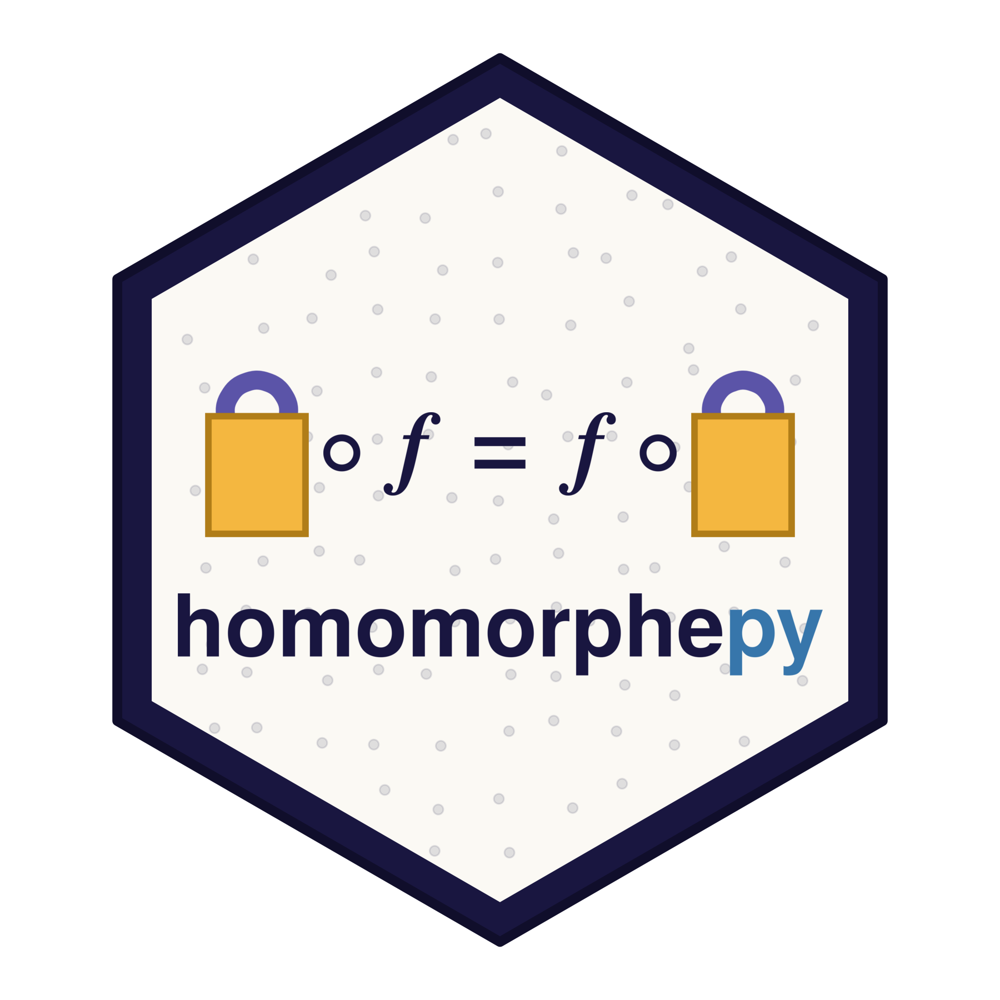

This page was rendered with the crypto backend available. Every number on these pages was computed through real encryption.
homomorphepy

homomorphepy is privacy-preserving statistics across sites that never share their data. It uses fully homomorphic encryption through the openfhe-python binding of OpenFHE — CKKS for real-valued arithmetic, BFV and BGV for exact integers — with n-of-n threshold key generation so that no single party can decrypt. On top of these it ships master/worker primitives that let ordinary Python modeling code — scipy.optimize.minimize(), stratified Cox partial likelihoods from statsmodels, convex programs via cvxpy — run across sites.
Version 1.0, wrapping OpenFHE 1.5.1. Install it by
pip install homomorphepyThe cox and cox-lasso pages also use statsmodels and cvxpy, which are optional rather than required:
pip install "homomorphepy[stats]"openfhe is an optional dependency because its published wheels are tagged py3-none-any while containing Linux/CPython-3.12 binaries — pip install reports success on macOS and the import then fails. See the README for the working paths.
The pages build up from a gentle introduction to complete distributed protocols:
Getting started
introduction— a quick tour of homomorphic computation in Python.precision— which encrypted computations are exact and which are approximate.aggregation— exact integer aggregation under BFV.query-count— a count across sites under threshold keys.mle— homomorphic maximum-likelihood estimation for a Poisson parameter.
Distributed statistical modeling under FHE
cox— stratified Cox regression distributed across sites under CKKS.cox-threshold— the same fit under n-of-n threshold key generation, so no single party can decrypt.cox-lasso— a Cox-lasso fit by consensus ADMM, withcvxpyat each site, under threshold FHE on the DLBCL gene-expression data.secure-inference— two-party encrypted prediction.encrypted-regression— logistic regression on encrypted data via a Chebyshev sigmoid approximation.similarity— federated cosine-similarity retrieval with site-private fine-tuned models.
Gaussian-noise variants
dp,consensus-admm-dp— the threshold-FHE protocols above with site-side Gaussian noise. Demonstrations, not a privacy guarantee.
Source
The code is on GitHub.